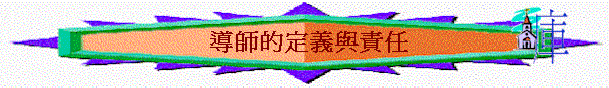

引言
記不記得你幾時有想作導帥的意念? 為何有? 當初有什麼心志？
一．導師的定義:
v.1 題到不同人有不同的恩賜，有那些恩賜，你認為作一個導師需要有的？
教師+牧人
二．教師的樣式與責任
a保羅作為個師傅(教師)，他有什麼責任？
教他們學真道
b嘗試再仔細看這節聖經，從保羅身上。我們可以學習什麼真理？(作導師的真理)
清楚教導的群體
清楚教導的次序--先領人信
清楚教導的內容
2.門徒的責任(太28:16-20)
a 如果一個基督徒說自己沒有作導師的恩賜，但在太28:16-20講一個信主的人應有什麼責任？
b 從這幾節聖經中，試發掘一些關乎作教導的真理 / 提醒．．．
要全面,要遵守,要認識主的話
3.耶穌的榜樣
[太 9:11]: 法利賽人看見，就對耶穌的門徒說：「你們的先生為什麼和稅吏並罪人
一同吃飯呢？」
[太 10:24]: 學生不能高過先生；僕人不能高過主人。
[太 10:25]: 學生和先生一樣，僕人和主人一樣，也就罷了。人既罵家主是別西卜（別西卜：是鬼王的名）， 何況他的家人呢？」: 到了迦百農，有收丁稅的人來見彼得，說：「你們的先生不納丁稅（丁稅約有半塊錢）嗎？」
[太 19:16]: 有一個人來見耶穌，說：「夫子（有古卷：良善的夫子），我該做什麼善
事才能得永生？」
[太 22:16]: 就打發他們的門徒同希律黨的人去見耶穌，說：「夫子，我們知道你是誠實人，並且誠誠實 實傳神的道，什麼人你都不徇情面，因為你不看人的外貌。
[太 22:36]: 「夫子，律法上的誡命，那一條是最大的呢？」
[可 4:38]: 耶穌在船尾上，枕著枕頭睡覺。門徒叫醒了他，說：「夫子！我們喪命，
你不顧嗎？」
[可 9:38]: 約翰對耶穌說：「夫子，我們看見一個人奉你的名趕鬼，我們就禁止他，因為他不跟從我們。」: 眾人中有幾個法利賽人對耶穌說：「夫子，責備你的門徒吧！」
[約 1:38]: 耶穌轉過身來，看見他們跟著，就問他們說：「你們要什麼？」他們說：「拉比，在那裡住？」（拉比繙出來就是夫子。）
[約 3:2]: 這人夜裡來見耶穌，說：「拉比，我們知道你是由神那裡來作師傅的；因為你所行的神蹟，若沒有神同在，無人能行。」
[約 8:4]: 就對耶穌說：「夫子，這婦人是正行淫之時被拿的。
[約 13:14]: 我是你們的主，你們的夫子，尚且洗你們的腳，你們也當彼此洗腳。
a 耶穌在世上，人對他有什麼稱呼？
b他在世作為一個「老師」，有什麼樣式，特別之處值得我們效法？
一同生活,同罪人一同,熟舊約,作僕人.....
c你認為自己在那一方面需要繼續追求，以致可以成為一個「好的老師」呢？
＊在新約原文中，牧人 = 牧師 = 作牧羊的
a 試從結34:1-16看一看一個牧人應有的責任與工作．．．
尋找,引導,醫治,餵養,保護
b在眾多工作中，作為一個屬靈上的牧人，你認為自己那一方面做得最多，那一方面做得最少？
[太 9:36]: 他看見許多的人，就憐憫他們；因為他們困苦流離，如同羊沒有牧人一般。
[太 26:31]: 那時，耶穌對他們說：「今夜，你們為我的緣故都要跌倒。因為經上記著說：我要擊打牧人，羊就分散了。
[約 10:2]: 從門進去的，才是羊的牧人。
[約 10:11]: 我是好牧人；好牧人為羊捨命。
[約 10:12]: 若是雇工，不是牧人，羊也不是他自己的，他看見狼來，就撇下羊逃走；狼抓住羊，趕散了羊群。
{約 10:14]: 我是好牧人；我認識我的羊，我的羊也認識我，
[約 10:16]: 我另外有羊，不是這圈裡的；我必須領他們來，他們也要聽我的聲音，並且要合成一群，歸一個牧人了。
～從以上經文中，我們的牧長---耶穌給我們有什麼美好的榜樣？
3.彼得的勸勉(彼前:1-4)
a 彼得勸勉作牧養的，應注意什麼？
牧養的責任: 務要
牧養的對象: 神的
牧養的方法: 按神的旨意
牧養的責任 甘心
b那一方面，最能提醒自己。試分享。
總結：你認為什麼叫做導師？
作導師應有什麼責任？
下次預告：查經à 提摩太前一章
時間：